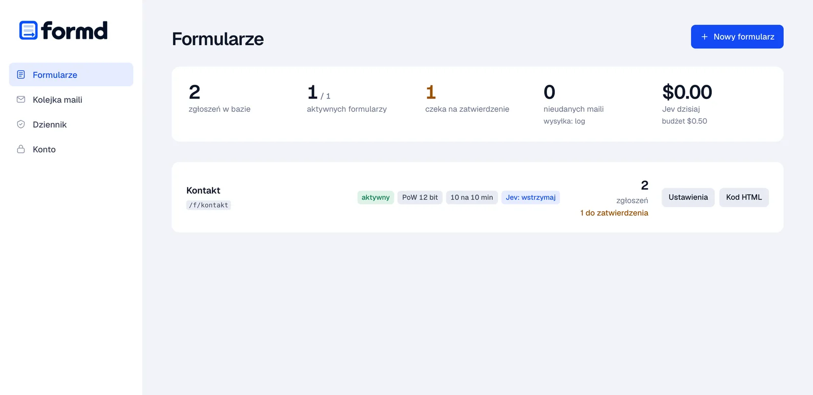
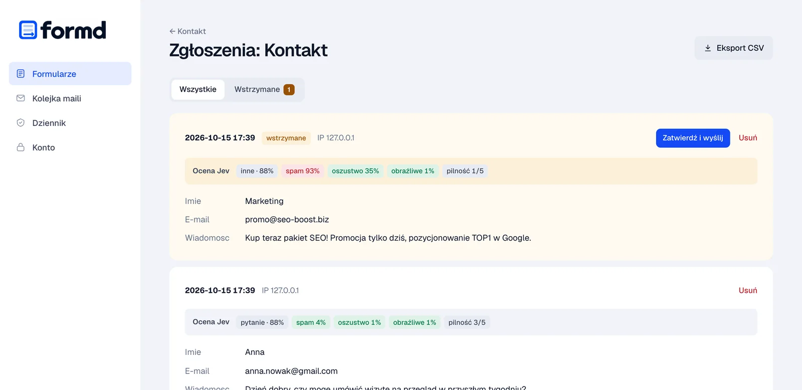
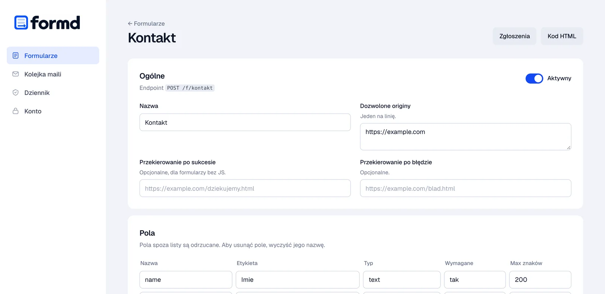
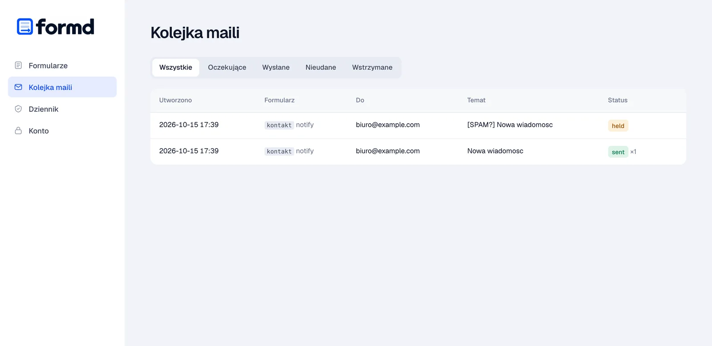
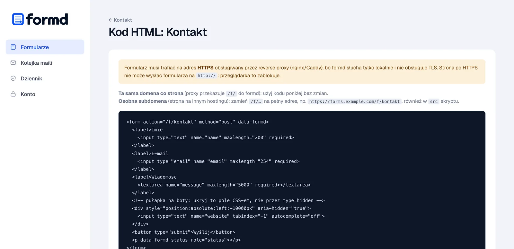

Your turn: send the form or send a bot
You will see every check formd runs and what reaches the inbox.
Or send it as a bot:
- Tokenformd.js fetched a single-use token when the page opened
- Browser workproof-of-work, 16 bits
- Origindid the form come from your site
- IP limitat most 5 submissions in 10 minutes
- Time to fill ina person needs at least 3 seconds
- Honeypotthe hidden field must stay empty
- Duplicatethe same content won’t get through twice
- Save and emailsubmission and emails in one SQLite transaction
- Emails show up here when a submission gets through.
Bots stopped: 0. None reached the inbox.
A Polish model reads the content
Bots fall to the cheap filters. Whatever gets past them can still be read by a language model: is it spam, a scam or abuse, what is it about and how urgent is it. formd uses the Polish basal models, running on your own hardware. The check is optional and you turn it on per form.
- A Polish model on your hardwarebasal-omni-1.0-ultra (31B) on an NVIDIA GPU, or the lighter basal-2.0-4.5B built on Bielik, which also runs on a Mac or a CPU. Form content never leaves your server and requests cost nothing.
- No GPU: Jev on OpenRouterThe same questions through an external API, about 0.00002 USD per submission. Email addresses are reduced to their domain.
- You decide what happens to suspicious onesHold them for approval in the panel, tag the subject with [SPAM?] or drop them. The model runs only after all the cheap filters, so the bots from the demo above never reach it.
Cheapest SEO links, buy now! We guarantee #1 on Google.
Risk 97% is above the 70% threshold: the submission waits for approval, no email went out.
Installing the model and configuring formd, step by step: README.
Run it yourself
You need a Linux server, a domain and nginx or Caddy. Enter your domain and every command below will use it.
-
Download formd
One statically linked binary for Linux x86-64 or ARM64. Verify the checksum before installing.
Prefer to build it yourself? You only need Go 1.27.2 or newer:
go build -o formd ./cmd/formdin a clone of the repository.curl -LO https://github.com/dc9-dev/formd/releases/download/v0.1.0/formd-linux-amd64 curl -LO https://github.com/dc9-dev/formd/releases/download/v0.1.0/SHA256SUMS sha256sum --check --ignore-missing SHA256SUMS -
Install the service
The script creates a
formdsystem user, copies the binary to/usr/local/bin, creates/etc/formd/formd.envwith mode 0640 and installs a hardened systemd unit.git clone --depth 1 --branch v0.1.0 https://github.com/dc9-dev/formd cd formd sudo sh deploy/install.sh ../formd-linux-amd64 -
Set up email
In
/etc/formd/formd.env, choose how mail is sent. Start withlogif you want to test the form before sending real email.MAILER=smtp MAIL_FROM="Website <no-reply@yoursite.com>" SMTP_HOST=smtp.yoursite.com SMTP_PORT=587 SMTP_USER= SMTP_PASS= SMTP_TLS=starttlsMAILER=ses MAIL_FROM="Website <no-reply@yoursite.com>" AWS_REGION=eu-central-1 # credentials: the instance IAM role, or # AWS_ACCESS_KEY_ID and AWS_SECRET_ACCESS_KEYMAILER=log # emails only go to the log: # journalctl -u formd -f -
Start it and create an account
The panel account needs a password of at least 12 characters. It is stored with argon2id.
sudo systemctl enable --now formd sudo -u formd formd -env /etc/formd/formd.env user add admin # formd only answers locally curl http://127.0.0.1:8025/healthz -
Expose /f/ over HTTPS
formd only listens on 127.0.0.1, so the world reaches it through your web server. Proxy only the
/f/path, never the panel.Caddy gets the certificate by itself on first start.
# sudo certbot --nginx -d yoursite.com server { listen 443 ssl; server_name yoursite.com; ssl_certificate /etc/letsencrypt/live/yoursite.com/fullchain.pem; ssl_certificate_key /etc/letsencrypt/live/yoursite.com/privkey.pem; root /var/www/yoursite.com; location /f/ { client_max_body_size 64k; proxy_pass http://127.0.0.1:8025; proxy_set_header Host $host; proxy_set_header X-Real-IP $remote_addr; proxy_set_header X-Forwarded-For $remote_addr; } location / { return 404; } }yoursite.com { root * /var/www/yoursite.com handle /f/* { request_body { max_size 64KB } reverse_proxy 127.0.0.1:8025 { header_up X-Real-IP {remote_host} } } handle { file_server respond 404 } } -
Open the panel and add a form
The panel runs on a separate port and is never exposed to the internet. Open an SSH tunnel from your computer, then go to
http://localhost:8026.In the panel, create a form called
contact, add the originhttps://yoursite.com, set up the fields and the address that should get notifications. Then enable it.ssh -L 8026:127.0.0.1:8026 yoursite.com -
Put the form on your site
Plain HTML and one script that fetches the token and does the proof-of-work. The panel also has ready-made code for every form, under “Kod HTML”.
formd’s built-in messages are in Polish. The
data-formd-*attributes below replace them with English ones.If your site sends a CSP header, add
forms.yoursite.comtoscript-src,connect-srcandform-action.<form action="/f/contact" method="post" data-formd="ajax" data-formd-sending="Sending…" data-formd-success="Thank you! Your message has been sent." data-formd-error="The form could not be sent." data-formd-network-error="Could not send the form. Try again." data-formd-server-errors="off"> <input name="name" required> <input type="email" name="email" required> <textarea name="message" required></textarea> <div style="position:absolute;left:-10000px" aria-hidden="true"> <input name="website" tabindex="-1" autocomplete="off"> </div> <button>Send</button> <p data-formd-status role="status"></p> </form> <script src="/f/formd.js" defer></script> -
Check it from outside
The script and the token should answer over HTTPS. Then send the form from your site and find the submission in the panel.
curl -I https://yoursite.com/f/formd.js # HTTP/2 200 curl https://yoursite.com/f/contact/challenge # {"bits":16,"min_seconds":3,"token":"…"}
Backups, upgrades, fail2ban and content checks: README on GitHub.
Only you see the panel
You open it through an SSH tunnel and never expose it to the internet. The data stays on your server, passwords are stored with argon2id, and sessions live on the server with CSRF protection. The panel is in Polish for now.





Questions
How do I add a contact form to a static site without a SaaS?
Install formd on a Linux server, proxy the /f/ path through nginx or Caddy over HTTPS, create the form in the panel and paste a plain HTML form with one script tag into your site. The guide above walks through every step for your domain.
Is formd a free alternative to Formspree, Netlify Forms or Basin?
Yes. formd is open source under AGPL-3.0 and runs on your own server, so there is no monthly plan and no submission quota other than the limits you set. Submissions stay in an SQLite database on your server instead of a third-party service. The trade-off is that you need a server to run it.
Does it work with GitHub Pages, Netlify, Cloudflare Pages or S3?
Yes. The site can stay where it is; formd runs on a subdomain such as forms.yoursite.com on a server you control, and the form posts there. If the site already runs on your own server, formd sits next to it under /f/.
How does formd stop spam without a captcha?
Each form gets a signed single-use token and the browser solves a small SHA-256 proof-of-work before sending. The server then checks the origin, rate limits per IP, the minimum fill time, a hidden honeypot field and duplicate content. Bots are told they succeeded, but nothing is saved or emailed.
Can it check message content with AI?
Optionally. formd can ask the Polish basal language models running on your own hardware, or Jev through OpenRouter, whether a message is spam, a scam or abusive. Suspicious submissions can be held for approval, tagged or dropped.
Where are submissions stored and how do I get them out?
In an SQLite database on your server. You read them in the admin panel, export them as CSV, or use the formd export command. Every submission is also emailed to you through your SMTP server or Amazon SES.
What do I need to run it?
A Linux server (x86-64 or ARM64), a domain, nginx or Caddy for HTTPS, and an SMTP account or Amazon SES. formd is a single binary with no other dependencies.